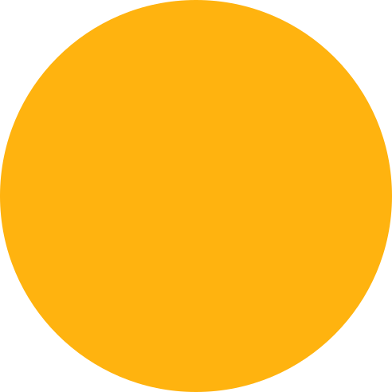
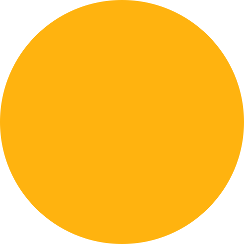

Mobile App Landing Page
Start focusing on your goals and get more things done with Sync mobile application. It's the first app to harness the power of social connections to help you stay focused and get organized
 

Start focusing on your goals and get more things done with Sync mobile application. It's the first app to harness the power of social connections to help you stay focused and get organized


Sync is the first mobile app on the market to harness the power of social connections to help you stop procrastinating and start getting things done. Give it a try and see the changes right away